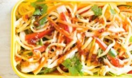

Hokkien Noodle Salad
You will need:
- - 450g fresh hokkien noodles
- - 1 carrot. Just one. Or more, if you /really/ like carrots.
- - 1 Lebanese cucumber
- - 1 red capsicum, thinly-sliced
- - 1.5 cups of shredded, cooked chicken
- - 1/4 cup of chopped fresh coriander
- - 2 tablespoons of salt-reduced soy sauce
- - 2 tablespoons of sweet chilli sauce
- - A wok is ideal, but so long as you can cook in it, anything goes. Also, a strainer.
Here's how you make 'em:
- 1. Cook fresh hokkien noodles following packet directions. Rinse under cold water. Drain.
- 2. Cut carrot and Lebanese cucumber into matchsticks. Toss noodles, carrot and cucumber, thinly sliced red capsicum, shredded cooked chicken, chopped fresh coriander, salt-reduced soy sauce and sweet chilli sauce together. Refrigerate for up to 2 days.

Back to recipes.